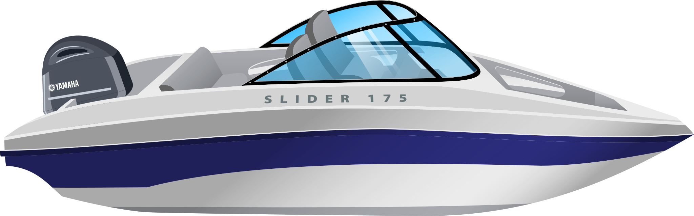
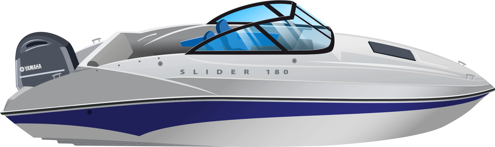
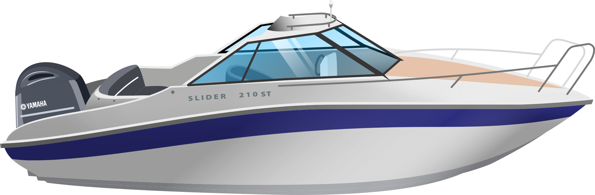
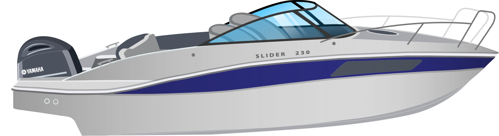
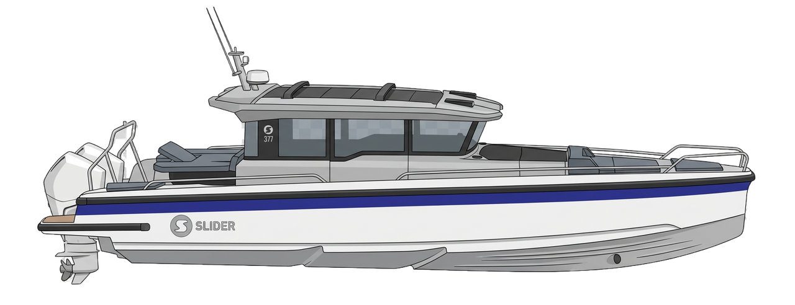

Модельный ряд
Семь катеров
Семь катеров
в одном масштабе
Силуэты нарисованы в одном масштабе по длине. От пятиметрового боурайдера до почти двенадцатиметрового круизера.
Slider 175Боурайдер · 5 мест

Slider 180Каютный · 7 мест

Slider 210Каютный · 8 мест

Slider 210 BRБоурайдер · 8 мест

Slider 210 STХардтоп · 8 мест

Slider 230Каютный · 8 мест

Slider 377Sport Cabin · до 12 чел

02 м4 м6 м8 м10 м11,7 м
Цена «от» указана за базовую комплектацию. Окраска и опции считаются в конфигураторе.